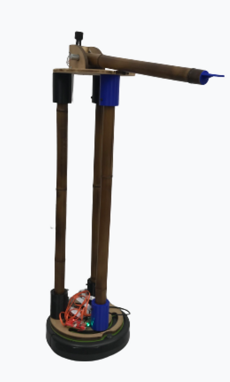
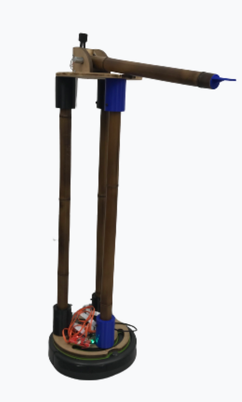

iRobot Revamp
What if you could feel like you were home, no matter where you were? My senior mechanical engineering design group is expanding the existing iRobot Create's capabilities to include telerobotic functionality.
Improvements will allow users to see their homes virtually and allow them to interact with their homes from the robot.
The most obvious challenge is how to get a robot that exists to be as unintrusive as possible to be able to interact with surroundings designed for people (creatures much taller than your average Roomba).
With these thoughts in mind, our task was to design modifications that allowed the robot to interact with the world while allowing its user to remotely control it.
The design process started with rough sketches to ideate the various ways we could accomplish our goals.


To the left are examples of sketches that we collaboratively drew during a session where we'd draw for a few minutes and swap sketches to improve each other's designs.
After creating an improved sketch, we each chose one to CAD and present to our sponsor from iRobot. I decided to model a scissor lift. (Because we decided it would require very tight tolerances to be as extendable as it need to be, it was an obvious no moving forward.) To the left is an animation of the scissor lift mechanism that would move the platform holding the camera and an arm up and down.
We settled on a fixed-height platform as our final design. We compared that design against our other solutions which involved movement and determined minimizing moving parts would ease the building process, a necessity given our accelerated timeline. This would also improve structural stability (at the cost of displacing the center of gravity much higher while moving compared to a movable design.) Another upside of this approach was that fixed length legs would be easy to manufacture with sustainably sourced bamboo. This final design is illustrated in the image to the right.
 

Of course, nothing goes exactly as planned. (And wow, one learns to expect unexpected delays that slow progress significantly). We quickly realized that our CAD model lacked lateral stability. We fixed this by adding an additional leg to make the platform on Raba more like it was sitting on a tripod.
Another issue we had mechanically was the strength of the motors. Our calculations suggested that the motor would be strong enough to lift the bamboo arm with a plastic end piece but it turned out the power supply for the motors was not able to provide sufficient current. This illustrated to us the importance of including important electrical systems in the detailed design to ensure correct components will be selected or made.
I took the lead on integrating the electromechanical systems, to create an opportunity for myself to learn how to use microcontrollers (in this case a Raspberry Pi). Raba needed to be controlled remotely while streaming video footage back to the client/user controlling Raba.
I created a Flask webserver that would serve a user a simple HTML based user interface with buttons to move the robot forward, backward, left, and right in addition to moving the arm up and down. The buttons would send calls back to the server running on the Raspberry Pi telling it to tell either the Create how to move or the motors to spin in forward or reverse. The beauty of using a Pi was that implementing a webstream only required importing a library and setting up a camera that was referenced in an HTML image element.
The problem with a default Flask server is that every time a user sends a GET request (i.e. presses a button or clicks a link), the entire page refreshes. This is obviously an issue because it would both make the robot totally uncontrollable and the webstream would refresh every time a user tried to move Raba, further increasing the difficulty of controlling it. The solution to this was to implement AJAX (Asynchronous Javascript And XML) which allowed, as the name suggests, data to be asynchronously transmitted between the user and Pi. This prevents the page from being refreshed while the user is controlling Raba. Because I had very little experience prior to this project setting up servers, implementation of AJAX required substantial research (thank you W3 schools and Stack Exchange) and even more substantial trial and error of small, iterative improvements.
Future improvements to be made include using CSS to improve the user interface of the webpage that users control Raba from and building an enclosure to hide the electronics on the base. The motor wires can also be run through the bamboo legs (since they are hollow) but time did not permit us to include this aesthetic improvement in version one of Raba.
While this was not the project I wanted to work on at the beginning of the class, I found a way to leave my mark on the robot and utilize skills I was able to develop through teaching myself basic web design and server creation.
I also learned how to deal with a teammate who can be better described as a "ghost partner" and how to delegate their responsibilities among the rest of the group. While this might sound pessimistic, that was the reality of the project and an obstacle that we overcame remarkably well considering every feature that made it onto the final robot worked when it was time to present.